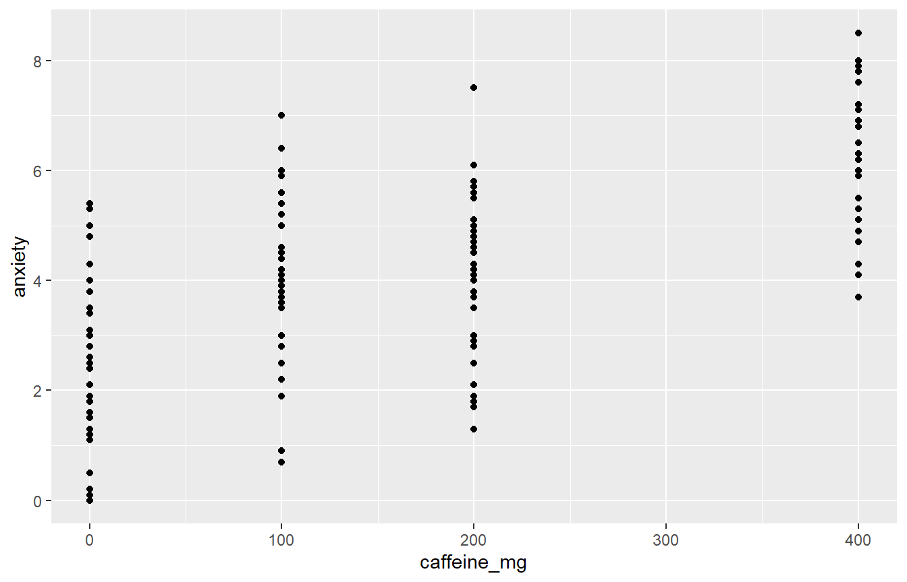
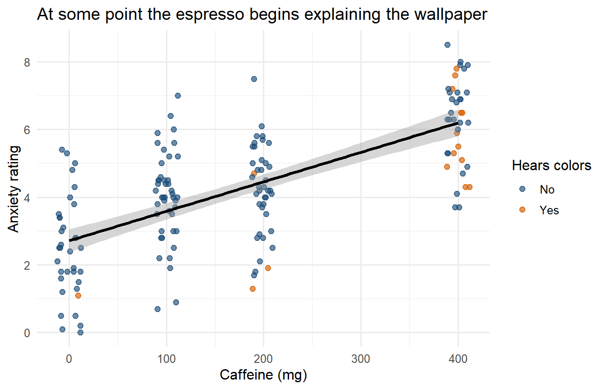
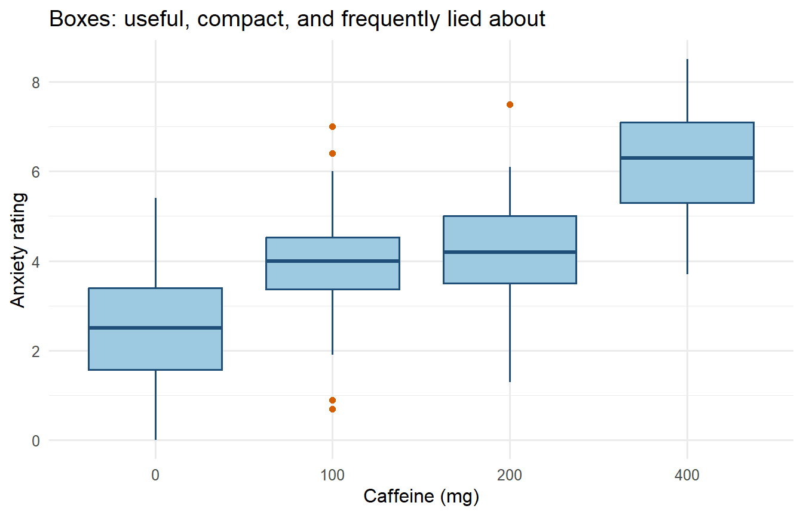
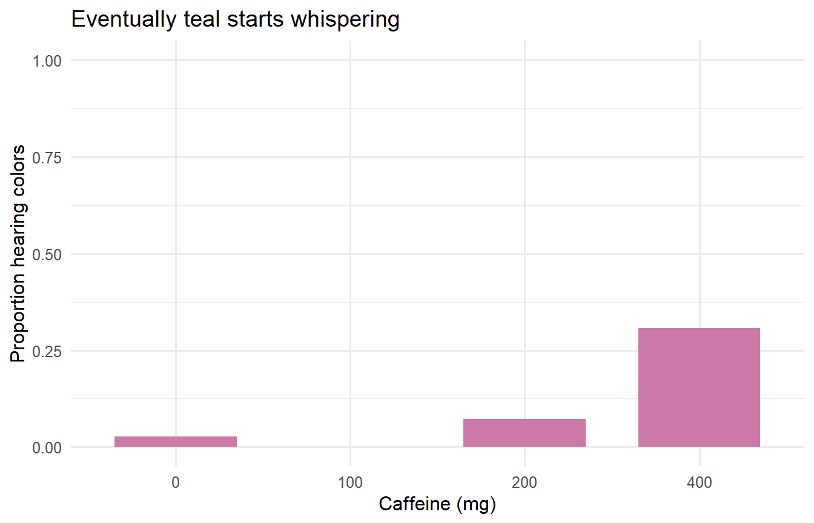
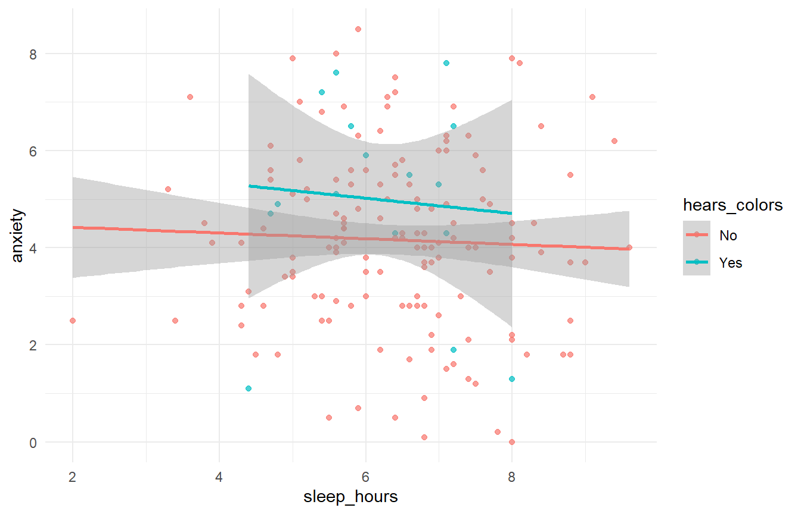

install.packages(c("dplyr", "ggplot2"))38 R Help and Review: Tidyverse Without Tears
38.1 Why Is This at the End of the Book?
This is not a second statistics course hiding in the closet. It is a compact reference for the R operations you will repeatedly forget five minutes after learning them. That is normal. Professional R users also look things up constantly; they have merely developed more dignified facial expressions while doing it.
The tidyverse is a collection of R packages designed around consistent ways of storing, transforming, summarizing, and plotting data. We will focus on two:
dplyrfor manipulating data.ggplot2for making graphs.
Install them once on a computer:
Load them again whenever you begin a new R session. This chunk really does run, and it is what makes every other chunk in the chapter work:
library(dplyr)
library(ggplot2)Installing is moving the furniture into your apartment. Loading is taking the furniture out of the closet so you can sit on it. Do not reinstall the sofa every morning.
38.2 Caffeine Study
We will simulate the data a completely fictional study, where 160 students consume different amounts of caffeine. We record sleep, anxiety, hatred of group projects, and whether the student begins hearing colors. No students actually consumed these doses. The IRB has stopped returning our calls for unrelated reasons.
set.seed(343)
n_students <- 160
lab_students <- data.frame(
student_id = seq_len(n_students),
caffeine_mg = sample(c(0, 100, 200, 400), n_students, replace = TRUE),
sleep_hours = round(pmin(10, pmax(2, rnorm(n_students, 6.2, 1.4))), 1),
group_project_hatred = sample(1:10, n_students, replace = TRUE)
)
color_probability <- plogis(
-4 + .010 * lab_students$caffeine_mg - .20 * (lab_students$sleep_hours - 6)
)
lab_students$hears_colors <- factor(
ifelse(rbinom(n_students, 1, color_probability) == 1, "Yes", "No"),
levels = c("No", "Yes")
)
lab_students$anxiety <- round(pmin(
10,
pmax(
0,
4 + .009 * lab_students$caffeine_mg -
.30 * lab_students$sleep_hours +
.12 * lab_students$group_project_hatred +
rnorm(n_students, 0, 1.2)
)
), 1)
head(lab_students) student_id caffeine_mg sleep_hours group_project_hatred hears_colors anxiety
1 1 0 4.8 6 No 1.8
2 2 400 7.1 9 No 6.2
3 3 200 3.4 5 No 2.5
4 4 100 6.9 6 No 1.9
5 5 400 7.0 1 Yes 5.3
6 6 400 5.6 5 No 4.7Because set.seed(343) fixes the random-number sequence, everyone gets the same fictional students. The Probability Gods are still fickle, but for this example we temporarily confiscated their dice.
38.3 Data Frames
A data frame is a rectangular collection of variables:
- Each row is one observational unit, here one student.
- Each column is one variable.
- Each cell is one student’s value on one variable.
This structure is often called tidy data when each variable has its own column, each observation has its own row, and each value has its own cell.
Useful first inspections include:
dim(lab_students)[1] 160 6names(lab_students)[1] "student_id" "caffeine_mg" "sleep_hours"
[4] "group_project_hatred" "hears_colors" "anxiety" str(lab_students)'data.frame': 160 obs. of 6 variables:
$ student_id : int 1 2 3 4 5 6 7 8 9 10 ...
$ caffeine_mg : num 0 400 200 100 400 400 400 100 100 200 ...
$ sleep_hours : num 4.8 7.1 3.4 6.9 7 5.6 8.4 5.6 3.8 6.5 ...
$ group_project_hatred: int 6 9 5 6 1 5 1 8 10 6 ...
$ hears_colors : Factor w/ 2 levels "No","Yes": 1 1 1 1 2 1 1 1 1 1 ...
$ anxiety : num 1.8 6.2 2.5 1.9 5.3 4.7 6.5 5.4 4.5 5.8 ...summary(lab_students) student_id caffeine_mg sleep_hours group_project_hatred
Min. : 1.00 Min. : 0.0 Min. :2.000 Min. : 1.0
1st Qu.: 40.75 1st Qu.:100.0 1st Qu.:5.600 1st Qu.: 3.0
Median : 80.50 Median :150.0 Median :6.400 Median : 5.0
Mean : 80.50 Mean :176.2 Mean :6.379 Mean : 5.5
3rd Qu.:120.25 3rd Qu.:200.0 3rd Qu.:7.200 3rd Qu.: 8.0
Max. :160.00 Max. :400.0 Max. :9.600 Max. :10.0
hears_colors anxiety
No :144 Min. :0.000
Yes: 16 1st Qu.:2.875
Median :4.200
Mean :4.247
3rd Qu.:5.500
Max. :8.500 str() is especially useful. It reveals whether R thinks a variable is numeric, character, or a factor before you spend 45 minutes accusing the regression model of personal betrayal.
38.4 The Native Pipe
Modern R uses |> to pass the result of one step into the next step:
lab_students |>
head(3) student_id caffeine_mg sleep_hours group_project_hatred hears_colors anxiety
1 1 0 4.8 6 No 1.8
2 2 400 7.1 9 No 6.2
3 3 200 3.4 5 No 2.5Read it as “and then.”
Start with
lab_students, and then keep highly caffeinated students, and then select the variables we want.
lab_students |>
filter(caffeine_mg >= 200) |>
select(student_id, caffeine_mg, anxiety, hears_colors) |>
head() student_id caffeine_mg anxiety hears_colors
1 2 400 6.2 No
2 3 200 2.5 No
3 5 400 5.3 Yes
4 6 400 4.7 No
5 7 400 6.5 No
6 10 200 5.8 NoOlder R code often uses %>%, the pipe from magrittr and dplyr. It is still valid, you will see it in published code (including my own), and the ancient inscriptions found beneath our Behavioral Science Building at UIC close to where we keep the chained demons. For everyday dplyr work the two mean the same thing, so when you find %>% on Stack Overflow you can read it as |> and carry on. This book uses |> everywhere, including the earlier chapters, which were swept so you would never have to wonder whether the difference mattered.
38.5 The Five Verbs You Will Use Constantly
38.5.1 select(): Keep Columns
small_data <- lab_students |>
select(student_id, caffeine_mg, sleep_hours, anxiety)
head(small_data) student_id caffeine_mg sleep_hours anxiety
1 1 0 4.8 1.8
2 2 400 7.1 6.2
3 3 200 3.4 2.5
4 4 100 6.9 1.9
5 5 400 7.0 5.3
6 6 400 5.6 4.7Remove columns with a minus sign:
lab_students |>
select(-student_id) |>
head() caffeine_mg sleep_hours group_project_hatred hears_colors anxiety
1 0 4.8 6 No 1.8
2 400 7.1 9 No 6.2
3 200 3.4 5 No 2.5
4 100 6.9 6 No 1.9
5 400 7.0 1 Yes 5.3
6 400 5.6 5 No 4.738.5.2 filter(): Keep Rows
chromatic_students <- lab_students |>
filter(hears_colors == "Yes")
nrow(chromatic_students)[1] 16Combine conditions with & for and and | for or:
lab_students |>
filter(caffeine_mg >= 200 & sleep_hours < 6) |>
head() student_id caffeine_mg sleep_hours group_project_hatred hears_colors anxiety
1 3 200 3.4 5 No 2.5
2 6 400 5.6 5 No 4.7
3 11 200 5.1 9 No 5.8
4 14 400 5.9 9 No 8.5
5 17 200 5.0 1 No 3.8
6 23 200 4.3 3 No 4.1Inside filter(), a comma means the same thing as &: every condition must be true. So filter(caffeine_mg >= 200, sleep_hours < 6) returns exactly the rows above. You will see both, including in the solutions at the end of this chapter, and neither is more correct than the other.
Use == to test equality. One = assigns an argument; two == ask whether values are equal. This tiny distinction has destroyed entire afternoons.
38.5.3 mutate(): Create or Change Columns
lab_students <- lab_students |>
mutate(
caffeine_per_hour_sleep = caffeine_mg / sleep_hours,
extremely_caffeinated = caffeine_mg >= 400
)
head(lab_students) student_id caffeine_mg sleep_hours group_project_hatred hears_colors anxiety
1 1 0 4.8 6 No 1.8
2 2 400 7.1 9 No 6.2
3 3 200 3.4 5 No 2.5
4 4 100 6.9 6 No 1.9
5 5 400 7.0 1 Yes 5.3
6 6 400 5.6 5 No 4.7
caffeine_per_hour_sleep extremely_caffeinated
1 0.00000 FALSE
2 56.33803 TRUE
3 58.82353 FALSE
4 14.49275 FALSE
5 57.14286 TRUE
6 71.42857 TRUEmutate() keeps the existing variables and adds or replaces columns. The expression is calculated once per row.
38.5.4 arrange(): Sort Rows
lab_students |>
arrange(desc(anxiety)) |>
select(student_id, caffeine_mg, sleep_hours, anxiety) |>
head(10) student_id caffeine_mg sleep_hours anxiety
1 14 400 5.9 8.5
2 152 400 5.6 8.0
3 72 400 8.0 7.9
4 130 400 5.0 7.9
5 129 400 8.1 7.8
6 145 400 7.1 7.8
7 114 400 5.6 7.6
8 22 200 6.4 7.5
9 73 400 5.4 7.2
10 158 400 6.4 7.2These are the students most likely to email at 2:13 a.m. with the subject line QUICK QUESTION!!!!!.
38.5.5 summarise(): Collapse Many Rows into Answers
lab_students |>
summarise(
n = n(),
mean_anxiety = mean(anxiety),
sd_anxiety = sd(anxiety),
median_sleep = median(sleep_hours),
proportion_hearing_colors = mean(hears_colors == "Yes")
) n mean_anxiety sd_anxiety median_sleep proportion_hearing_colors
1 160 4.2475 1.863315 6.4 0.1Unlike mutate(), summarise() reduces many rows to a smaller summary. n() counts rows. A logical statement such as hears_colors == "Yes" becomes TRUE or FALSE; its mean is therefore the proportion that is TRUE.
38.6 Group, Then Summarize
group_by() tells later verbs to operate separately within categories.
caffeine_summary <- lab_students |>
group_by(caffeine_mg) |>
summarise(
n = n(),
mean_anxiety = mean(anxiety),
sd_anxiety = sd(anxiety),
mean_sleep = mean(sleep_hours),
proportion_hearing_colors = mean(hears_colors == "Yes"),
.groups = "drop"
)
caffeine_summary# A tibble: 4 x 6
caffeine_mg n mean_anxiety sd_anxiety mean_sleep proportion_hearing_colors
<dbl> <int> <dbl> <dbl> <dbl> <dbl>
1 0 36 2.48 1.45 6.23 0.0278
2 100 44 4.01 1.33 6.16 0
3 200 41 4.18 1.36 6.47 0.0732
4 400 39 6.22 1.28 6.66 0.308 .groups = "drop" removes the grouping after the summary. This prevents the invisible ghost of a previous grouping decision from possessing later analyses.
For simple frequency tables, count() is faster:
lab_students |>
count(caffeine_mg, hears_colors) caffeine_mg hears_colors n
1 0 No 35
2 0 Yes 1
3 100 No 44
4 200 No 38
5 200 Yes 3
6 400 No 27
7 400 Yes 12For the same summaries across several columns, use across():
lab_students |>
group_by(caffeine_mg) |>
summarise(
across(
c(sleep_hours, anxiety, group_project_hatred),
list(mean = mean, sd = sd),
.names = "{.col}_{.fn}"
),
.groups = "drop"
)# A tibble: 4 x 7
caffeine_mg sleep_hours_mean sleep_hours_sd anxiety_mean anxiety_sd
<dbl> <dbl> <dbl> <dbl> <dbl>
1 0 6.23 1.57 2.48 1.45
2 100 6.16 1.13 4.01 1.33
3 200 6.47 1.29 4.18 1.36
4 400 6.66 1.26 6.22 1.28
# i 2 more variables: group_project_hatred_mean <dbl>,
# group_project_hatred_sd <dbl>38.7 Reading a Real Data File
Quarto renders the book from the project directory. Use a project-relative path instead of setwd():
caffeine_data <- read.csv("data/caffeine.csv")This says the file lives in a folder named data inside the project. Hard-coding a path to one person’s Dropbox guarantees that the code will fail on another computer, next semester, or immediately after Alex reorganizes his folders during an avoidable burst of optimism.
38.8 ggplot2: Build a Graph in Layers
A ggplot usually has three core ingredients:
- Data: the data frame.
- Aesthetics: variables mapped to position, color, shape, or size with
aes(). - Geometries: the marks placed on the graph, such as points, bars, or boxes.
ggplot(
data = lab_students,
mapping = aes(x = caffeine_mg, y = anxiety)
) +
geom_point()
The + adds layers to a ggplot. It is not interchangeable with the pipe. The pipe moves data through operations; the plus sign adds components to a graph. R is very committed to making punctuation carry emotional weight.
38.8.1 Scatterplot with a Model Line
ggplot(lab_students, aes(x = caffeine_mg, y = anxiety, color = hears_colors)) +
geom_jitter(width = 12, height = 0, alpha = .65, size = 2) +
geom_smooth(method = "lm", se = TRUE, color = "black") +
scale_color_manual(values = c("No" = "#1F4E79", "Yes" = "#D55E00")) +
labs(
x = "Caffeine (mg)",
y = "Anxiety rating",
color = "Hears colors",
title = "At some point the espresso begins explaining the wallpaper"
) +
theme_minimal(base_size = 12)
geom_jitter() moves overlapping points by a tiny random amount horizontally so we can see them. It does not change the caffeine condition stored in the data.
38.8.2 Boxplots, Correctly Explained
ggplot(lab_students, aes(x = factor(caffeine_mg), y = anxiety)) +
geom_boxplot(fill = "#9ECAE1", color = "#1F4E79", outlier.color = "#D55E00") +
labs(
x = "Caffeine (mg)",
y = "Anxiety rating",
title = "Boxes: useful, compact, and frequently lied about"
) +
theme_minimal(base_size = 12)
The line inside each box is the median. The bottom and top of the box are the first and third quartiles, so the box contains the middle 50% of scores. Its height is the interquartile range (IQR). The whiskers ordinarily extend to the most extreme observed values within 1.5 IQRs of the box; points beyond them are plotted separately.
Those separate points are not automatically errors, criminals, or volunteers for deletion. They are observations that deserve inspection and an explanation.
38.8.3 Plotting a Summary
ggplot(caffeine_summary, aes(x = factor(caffeine_mg), y = proportion_hearing_colors)) +
geom_col(fill = "#CC79A7", width = .70) +
scale_y_continuous(limits = c(0, 1)) +
labs(
x = "Caffeine (mg)",
y = "Proportion hearing colors",
title = "Eventually teal starts whispering"
) +
theme_minimal(base_size = 12)
geom_col() uses the y-values already calculated in caffeine_summary. geom_bar() would count raw rows instead. This difference is small, annoying, and worth remembering.
38.9 A Compact Workflow
Most routine work follows this sequence:
analysis_data <- lab_students |>
filter(!is.na(anxiety)) |>
mutate(caffeine_group = factor(caffeine_mg)) |>
select(student_id, caffeine_group, sleep_hours, anxiety, hears_colors)
analysis_summary <- analysis_data |>
group_by(caffeine_group) |>
summarise(
n = n(),
mean = mean(anxiety),
sd = sd(anxiety),
.groups = "drop"
)
analysis_summary# A tibble: 4 x 4
caffeine_group n mean sd
<fct> <int> <dbl> <dbl>
1 0 36 2.48 1.45
2 100 44 4.01 1.33
3 200 41 4.18 1.36
4 400 39 6.22 1.28- Start with the original data.
- Filter only with a defensible rule.
- Create or recode needed variables.
- Select the variables used in the analysis.
- Check and summarize the result.
- Graph the data before asking a model to explain them.
Keep the original data unchanged and create a new analysis object. Overwriting the only copy of a variable is how Final_Data_REAL_v7_USE_THIS_ONE.csv enters the world.
38.10 Practice: Make the Caffeine Data Confess
Try these before looking at the solutions:
- Keep students who slept fewer than six hours and consumed at least 200 mg of caffeine.
- For each caffeine dose, calculate sample size, median anxiety, IQR of anxiety, and the proportion hearing colors.
- Create a scatterplot of sleep and anxiety, coloring points by whether the student hears colors.
- Find the ten students with the highest caffeine-per-hour-of-sleep values.
TipSolutions, because suffering has limits
sleep_deprived_and_caffeinated <- lab_students |>
filter(sleep_hours < 6, caffeine_mg >= 200)
practice_summary <- lab_students |>
group_by(caffeine_mg) |>
summarise(
n = n(),
median_anxiety = median(anxiety),
iqr_anxiety = IQR(anxiety),
proportion_hearing_colors = mean(hears_colors == "Yes"),
.groups = "drop"
)
ggplot(lab_students, aes(x = sleep_hours, y = anxiety, color = hears_colors)) +
geom_point(alpha = .70) +
geom_smooth(method = "lm", se = TRUE) +
theme_minimal()
most_concerning_students <- lab_students |>
arrange(desc(caffeine_per_hour_sleep)) |>
select(student_id, caffeine_mg, sleep_hours, caffeine_per_hour_sleep) |>
head(10)
practice_summary# A tibble: 4 x 5
caffeine_mg n median_anxiety iqr_anxiety proportion_hearing_colors
<dbl> <int> <dbl> <dbl> <dbl>
1 0 36 2.5 1.82 0.0278
2 100 44 4 1.15 0
3 200 41 4.2 1.5 0.0732
4 400 39 6.3 1.8 0.308 most_concerning_students student_id caffeine_mg sleep_hours caffeine_per_hour_sleep
1 30 400 3.6 111.11111
2 105 400 4.8 83.33333
3 130 400 5.0 80.00000
4 51 400 5.4 74.07407
5 73 400 5.4 74.07407
6 6 400 5.6 71.42857
7 27 400 5.6 71.42857
8 114 400 5.6 71.42857
9 152 400 5.6 71.42857
10 124 400 5.7 70.1754438.11 Final Advice
Write code as a sequence of small, named decisions. Inspect the result after each important transformation. Make graphs before interpreting models. When something fails, read the error message from the bottom up and identify the first object or argument R says it cannot find.
Most importantly, do not confuse code that runs with an analysis that makes sense. R will cheerfully calculate the mean of participant ID numbers, regress anxiety on alphabetical order, and draw a confidence interval around almost any mistake you can encode. The software is obedient. You still have to be the adult in the room, which seems unfair but is apparently how science works.